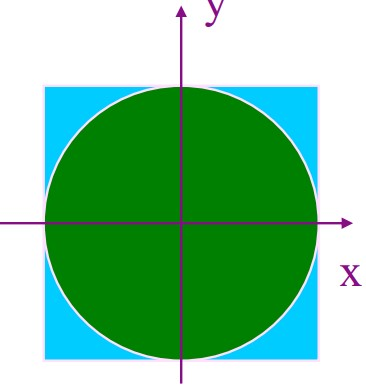
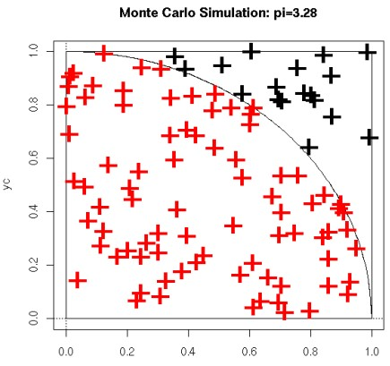
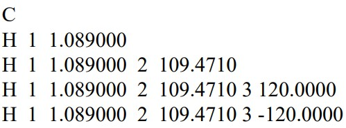
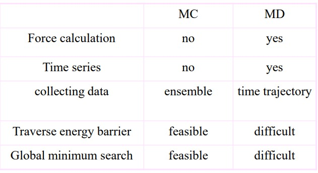
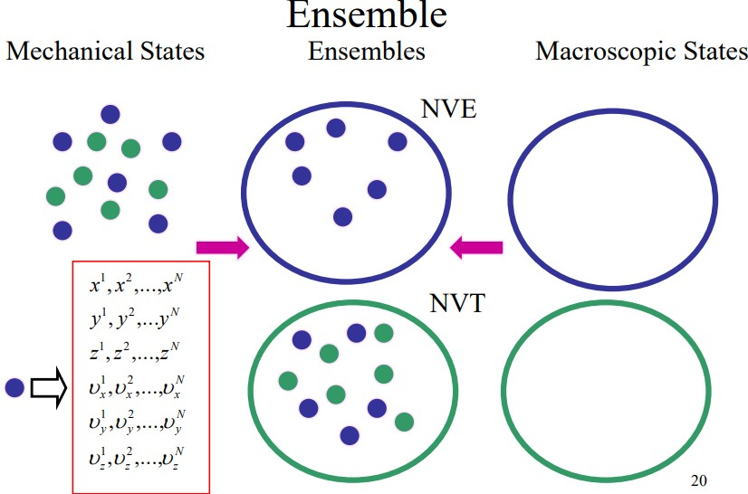
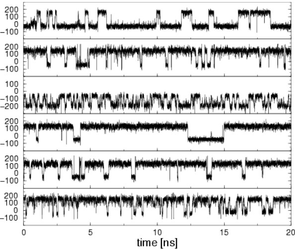
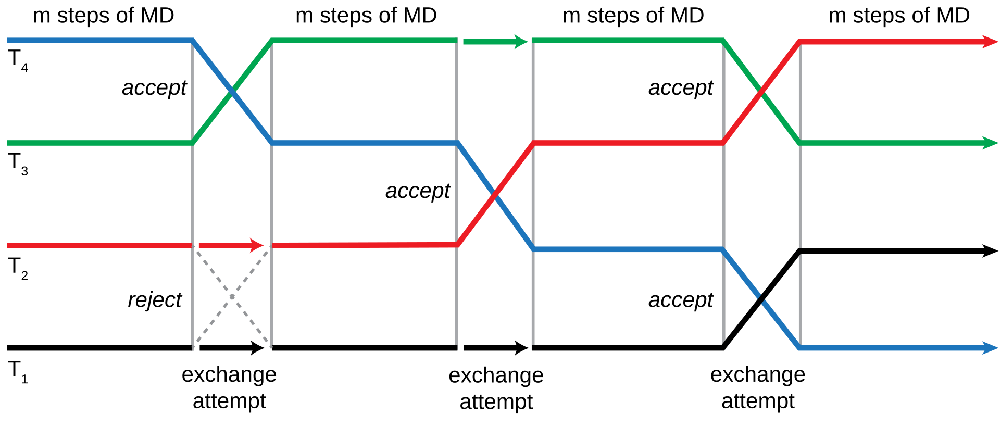

7 Monte Carlo Simulations and Basic Statistical Mechanics
7.1 Monte Carlo Simulations
“In a Monte Carlo simulation we attempt to study the system of a model for which change, or growth, does not proceed in some rigorously predefined fashion (e.g. according to Newton’s equations of motion) but rather in a stochastic manner which depends on a sequence of random numbers which is generated during the simulation.”
– Landau and Binder
A Monte Carlo simulation is a mathematical technique that is used to estimate the outcome of an uncertain event1.
7.1.1 Generating Random Numbers
When a number is said to be pseudorandom, it means that there is some sort of algorithm (i.e., recursion) used to generate a sequence of numbers based on an initial number (i.e., the “seed”) \(x_0\).
The resultant set of numbers generated \(\{x_1, x_2, x_3, ...\}\) are independent of one another, uniform, and follow a long period.
7.1.1.1 Linear Congruential Generators (i.e., LCGs)
This was an approached first used in 1948 by DH Lehmer to generate pseudorandom numbers. The process is as follows:
- Multiply the previous term by a constant \(a\).
- Add the product in 1. to another constant \(c\).
- Take the modulus of the result with respect to a large number \(M\).
Therefore, the next pseudorandom number generated \(X_{i + 1}\) is equivalent to \((aX_i + c)\mod(M)\)
7.1.2 Monte Carlo Sampling to Estimate \(\pi\)
The area of the green circle \(\pi r^2\) is proportional to the possibility of finding a point inside the object when the point is selected at random.
If we choose 1000 points in the above figure, 800 points will land inside the quarter circle.

Nonetheless, initially assume that \(N_{in} = 0\) - then, we perform the following \(N\) times:
- We calculate two random numbers \(x\) and \(y\).
- If \(x^2 + y^2 < l\), then \(N_{in} = N_{in} + l\)
Hence, we can argue that \(\displaystyle \pi \approx \frac{4N_{in}}{N}\)
7.2 Metropolis Algorithm and Markov Chains
In canonical ensembles, the probability density function is proportional to the Boltzmann factor via the following equation:
\[\begin{equation} \rho(X) \alpha \exp(-\beta E(X)) \end{equation}\]Where \(\displaystyle \beta = \frac{1}{k_BT}\). To calculate a physical quantity \(A\) for an ensemble, we would need to calculate the value of the following integral:
\[\begin{equation} A = \int \rho(X) A(X) dX \end{equation}\]Using Monte Carlo Sampling, the integral becomes:
\[\begin{equation} A = \lim_{m \rightarrow \infty}\sum_{i = 1}^MA(X_i) \end{equation}\]7.2.1 Metropolis Algorithm
This algorithm - devised in 1953 - is an efficient and simple procedure for the canonical ensemble.
For \(i = 0, 1, 2, ...\) given \(X_0\), we do the following:
- Generate \(X_{i + 1}'\) from \(X_i\) using a perturbation technique
- Compute \(\Delta E = E(X_{i + 1}' - E(X_i)\)
- If \(\Delta E < 0\) (i.e., a downhill move), \(X_{i + 1} = X'_{i + 1}\), else \(\rho = \exp(-\beta \Delta E)\) - if \(\rho\) is larger than a random number, then \(X_{i + 1} = X'_{i + 1}\).
- The above three steps repeat.
7.2.2 Markov Chains
The metropolis algorithm generates a chain of molecule states \(\{X_1, X_2, X_3, ...\}\). States that have a lower energy are always accepted, but states with higher energies have a nonzero probability of acceptance too.
Because of this, sampling typically occurs in regions of lower energies, but the system can escape to other energy basins by jumping over large energy barriers.
7.2.2.1 BOSS Program
The Biochemical and Organic Simulation System (i.e., BOSS) program is a general purpose molecular modeling system that performs molecular mechanics, monte carlo simulations, and other quantum mechanical calculations.
A monte carlo simulation generates a new configuration via random motions. This difference in energy between the new and the old set is used as a selection criterion in the Metropolis algorithm - this procedure is then repeated and uses internal coordinates
7.2.2.2 Z Matrices
A Z-matrix is used to represent a system made out of atoms - it is also known as an internal coordinate representation.

Z-matrices provide a description of each atom in a molecule in term of its atomic number, its bond length, its bond angle, and its dihedral angle (i.e., the internal coordinates).
The first line of the above Z-matrix contains a carbon atom (i.e., atom 1).
The second line contains a hydrogen atom (i.e., atom 2) the “H 1 1.089000” represents the distance between the hydrogen atom in question and the first atom (i.e., the carbon atom mentioned in the preceding paragraph).
The third line states that the bond angle between the first, the second, and the third atom is 109.471 degrees.
The fourth line states that the dihedral angle between the current atom and the other three atoms is 120 degrees.
7.2.3 Comparing Molecular Dynamics and Molecular Computation

7.3 Statistical Mechanics
The mechanical or microscopic state of a system is given by its atomic positions \(q\) and its momenta \(p(m_iv_i)\). The latter can also be considered as coordinates in a multidimensional space called the phase space.
For a system with \(N\) particles, the phase space has \(6N\) dimensions. A single point in this space describes the system’s state.
The thermodynamic or macroscopic state of a system is defined by a small set of parameters - for instance, the temperature \(T\), the pressure \(P\), and the number of particles \(P\).
7.3.1 Types of Ensembles

An ensemble is a collection of possible systems (with different microscopic states), but have an identical macroscopic or thermodynamic state.
There are several states examined in BS3008:
Microcanonical Ensemble (NVE)
The thermodynamical state is characterized by a fixed amount of atoms \(N\), a fixed volume \(V\), and a fixed energy \(E\). This is an isolated system.
Canonical Ensemble (NVT)
The thermodynamical state has a fixed number of atoms and a fixed volume and temperature.
Isobaric-Isothermal Ensemble (NPT)
The ensemble has a constant amount of atoms and a constant pressure and temperature.
Grand Canonical Ensemble (\(\mu\)VT)
The thermodynamic state has a constant volume, temperature, and chemical potential.
7.3.2 Entropy
\[\begin{equation} S = -k_B \sum_iP_i^B \ln(P_i^B) \end{equation}\]The entropy of a system is also the ensemble average.
7.3.3 Potential of Mean Force

The potential of mean force (i.e., PMF) is the free energy of one or more coordinates. It is defined from the average distribution function:
\[\begin{align} w(x) &= w(x') - k_BT \cdot \ln\left(\frac{\rho(x)}{\rho(x')}\right) \\ \rho(x) &= \sum_{i \in data}\delta(x - x_i) \end{align}\]Where \(w\) is the PMF,\(x\) is the coordinate, and \(x'\) is a reference point.
7.3.3.1 Procedure for Calculating PMF
Once a MD or a MC study has been performed:
- \(\phi\) and \(\psi\) can be calculated from trajectories.
- Divide the range of \(\phi\) as \(x\) into \(N\) bins.
- Count the number in each bin \(n(x)\).
- Calculate the free energy difference between two bins or two states via the equation \(\displaystyle F = -k_BT\ln\left(\frac{n(x_!)}{n(x_2)}\right)\)
7.4 Ergodic Hypothesis
In reality, the summation of different states in an ensemble is super tough as one must calculate the possible states of a system.
In a molecular dynamic simulation, the points in an ensemble are calculated sequentially in time, so to calculate an average, the simulation must pass through all possible states that correspond to the particular thermodynamic constraints.
Another way also involves determining a time average of \(A\):
\[\begin{equation} A_{time} = \frac{1}{\tau}\sum_{r \rightarrow \infty}A(p^N(t), r^N(t)) \approx \sum_{t = 1}^MA(t) \end{equation}\]Where \(t\) is the simulation time, \(M\) the number of time steps in the simulation, and \(A(p^N, r^N)\) is the instantaneous value of \(A\).
7.4.1 Dilemma
The dilemma of the above is that a molecular dynamics simulation can calculate time averages, but the experimental observables are assumed to be ensemble averages.
\[\begin{equation} A_{ensemble} = A_{time} \end{equation}\]Hence, the ergodic hypothesis states that the time average is equivalent to the ensemble average - in other terms, the above equation.
7.5 Replica Exchange Simulations

A replica exchange simulation is an advanced sampling technique that involves performing numerous molecular dynamics simulations on many copies of a system with a different value for some control parameter.
The point behind a replica exchange simulation is to ensure that high-temperature configurations can overcome energy barriers on a potential energy surface.
When a replica exchange simulation is done at a low temperature, the sampling represent the lowest energy minima while the high temperature ones are capable of sampling the entire surface. This is superbly advantageous over Monte Carlo or traditional molecular dynamics simulations as both those methods tend to be on the slower side of things.